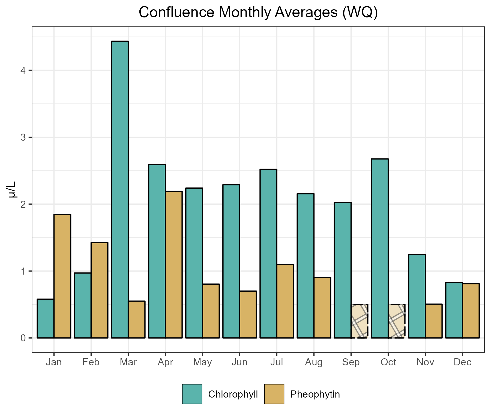

Current Report
Introduction
The Department of Water Resources (DWR) and the US Bureau of Reclamation (USBR) are required by Water Right Decision 1641 (D-1641) to collect phytoplankton and chlorophyll a samples to monitor algal community composition and biomass at select sites in the upper San Francisco Estuary (Estuary). This report describes the results of these monitoring efforts for water year 2022, which was classified as a critical year in the Sacramento Valley (source).
Methods
Samples were collected monthly at 24 monitoring sites throughout the Upper Estuary and were grouped into regions based on their geographic location (Figure 1; Table 1). These sites represent a variety of aquatic habitats, from narrow, freshwater channels to broad, estuarine bays.

| Region | Stations |
|---|---|
| Nothern Interior Delta | C3A and NZ068 |
| Southern Interior Delta | C9, C10A, MD10A and P8 |
| Central Delta | D16, D19, D26 and D28A |
| The Confluence | D4, D10, D12 and D22 |
| Grizzly and Suisun Bay | D7, D8, NZ032 and NZS42 |
| San Pablo Bay | D6, D41, D41A, NZ002, NZ004 and NZ325 |
Phytoplankton
The 10 most common genera were determined by summing the normalized organism counts across all stations and months for each genus. For the bar graphs, average organism counts were calculated per month, per region, and normalized to the number of stations. Average summary statistics are reported as the mean (μ) ± the standard deviation.
For more in-depth methodology, see here.
Chlorophyll a and Pheophytin a
Samples of chlorophyll a and pheophytin a were collected monthly at 24 monitoring sites throughout the upper Estuary using a submersible pump positioned 1 meter below the water’s surface. Average analyte concentrations were then calculated per month, per region, and were normalized to the number of stations. Average summary statistics are reported as the median (M) ± the median absolute deviation.
For more in-depth methodology, see here.
Overall Results
Phytoplankton Identification
All organisms collected in 2022 fell into these 10 algal groups:
• Chrysophytes
• Cryptophytes
• Cyanobacteria
• Diatoms (Pennate and Centric)
• Dinoflagellates
• Euglenoids
• Green Algae
• Haptophytes
• Raphidophytes
The 10 most common genera collected in 2022 were, in order:
• Eucapsis (cyanobacteria)
• Cyclotella (centric diatoms)
• Plagioselmis (cryptophytes)
• Nitzschia (pennate diatoms)
• Chlorella (green algae)
• Cocconeis (cyanobacteria)
• Teleaulax (centric diatoms)
• Cryptomonas (cryptophytes)
• Monoraphidium (pennate diatoms)
• Navicula (green algae)
Of the 10 groups identified, cryptophytes, cyanobacteria, diatoms, and green algae constituted the vast majority (97.7%) of the organisms collected.

Pigment Concentrations
97.9% of samples had chlorophyll a levels below 10 μg/L. Chlorophyll a levels below 10 μg/L are considered limiting for zooplankton growth (Müller-Solger et al., 2002). Of the 7 samples with chlorophyll a concentrations equal to or above 10 μg/L, one occurred at NZ325 in April; three occurred in August (NZ002, NZ004, and NZ325); one occurred at NZ325 in February; one occurred at D10 in March; and one occurred at D41A in May.
The average chlorophyll a concentration was 2.08 ± x μg/L; this is lower than the critical year average (M = 2.37 ± x μg/L). Values ranged from < 0.5 μg/L (the reporting limit) to 49.8 μg/L (NZ325 in August). 8 samples were below the reporting limit.
The average pheophytin concentration was 2.08 ± x μg/L; this is lower than the critical year average (M = 2.37 ± x μg/L). Values ranged from < 0.5 μg/L (the reporting limit) to 49.8 μg/L (NZ325 in August). 8 samples were below the reporting limit.
Regional Results
Northern Interior Delta
Water Quality
The average chlorophyll a concentration was 2.08 ± x μg/L; this is lower than the critical year average (M = 2.37 ± x μg/L). Values ranged from < 0.5 μg/L (the reporting limit) to 49.8 μg/L (NZ325 in August). 8 samples were below the reporting limit.
The average pheophytin concentration was 2.08 ± x μg/L; this is lower than the critical year average (M = 2.37 ± x μg/L). Values ranged from < 0.5 μg/L (the reporting limit) to 49.8 μg/L (NZ325 in August). 8 samples were below the reporting limit.

Phytoplankton
Average algal group density (based on x number of stations) was x ± y organisms/mL. The most abundant algal groups were cyanobacteria (80% of organisms, μ = 1,595 ± x organisms/mL), diatoms (10% of organisms, μ = x ± y organisms/mL), and green algae (5% of organisms, μ = x ± y organisms/mL). The remaining 5% of organisms were comprised of chrysophytes, cryptophytes, dinoflagellates, euglenoids, haptophytes, and raphidophytes (“Other”, Figure x).

Southern Interior Delta
Water Quality
The average chlorophyll a concentration was 2.08 ± x μg/L; this is lower than the critical year average (M = 2.37 ± x μg/L). Values ranged from < 0.5 μg/L (the reporting limit) to 49.8 μg/L (NZ325 in August). 8 samples were below the reporting limit.
The average pheophytin concentration was 2.08 ± x μg/L; this is lower than the critical year average (M = 2.37 ± x μg/L). Values ranged from < 0.5 μg/L (the reporting limit) to 49.8 μg/L (NZ325 in August). 8 samples were below the reporting limit.

Phytoplankton
Average algal group density (based on x number of stations) was x ± y organisms/mL. The most abundant algal groups were cyanobacteria (80% of organisms, μ = 1,595 ± x organisms/mL), diatoms (10% of organisms, μ = x ± y organisms/mL), and green algae (5% of organisms, μ = x ± y organisms/mL). The remaining 5% of organisms were comprised of chrysophytes, cryptophytes, dinoflagellates, euglenoids, haptophytes, and raphidophytes (“Other”, Figure x).

Central Delta
Water Quality
The average chlorophyll a concentration was 2.08 ± x μg/L; this is lower than the critical year average (M = 2.37 ± x μg/L). Values ranged from < 0.5 μg/L (the reporting limit) to 49.8 μg/L (NZ325 in August). 8 samples were below the reporting limit.
The average pheophytin concentration was 2.08 ± x μg/L; this is lower than the critical year average (M = 2.37 ± x μg/L). Values ranged from < 0.5 μg/L (the reporting limit) to 49.8 μg/L (NZ325 in August). 8 samples were below the reporting limit.

Phytoplankton
Average algal group density (based on x number of stations) was x ± y organisms/mL. The most abundant algal groups were cyanobacteria (80% of organisms, μ = 1,595 ± x organisms/mL), diatoms (10% of organisms, μ = x ± y organisms/mL), and green algae (5% of organisms, μ = x ± y organisms/mL). The remaining 5% of organisms were comprised of chrysophytes, cryptophytes, dinoflagellates, euglenoids, haptophytes, and raphidophytes (“Other”, Figure x).

Confluence
Water Quality
The average chlorophyll a concentration was 2.08 ± x μg/L; this is lower than the critical year average (M = 2.37 ± x μg/L). Values ranged from < 0.5 μg/L (the reporting limit) to 49.8 μg/L (NZ325 in August). 8 samples were below the reporting limit.
The average pheophytin concentration was 2.08 ± x μg/L; this is lower than the critical year average (M = 2.37 ± x μg/L). Values ranged from < 0.5 μg/L (the reporting limit) to 49.8 μg/L (NZ325 in August). 8 samples were below the reporting limit.

Phytoplankton
Average algal group density (based on x number of stations) was x ± y organisms/mL. The most abundant algal groups were cyanobacteria (80% of organisms, μ = 1,595 ± x organisms/mL), diatoms (10% of organisms, μ = x ± y organisms/mL), and green algae (5% of organisms, μ = x ± y organisms/mL). The remaining 5% of organisms were comprised of chrysophytes, cryptophytes, dinoflagellates, euglenoids, haptophytes, and raphidophytes (“Other”, Figure x).

Grizzly Bay and Suisun Bay
Water Quality
The average chlorophyll a concentration was 2.08 ± x μg/L; this is lower than the critical year average (M = 2.37 ± x μg/L). Values ranged from < 0.5 μg/L (the reporting limit) to 49.8 μg/L (NZ325 in August). 8 samples were below the reporting limit.
The average pheophytin concentration was 2.08 ± x μg/L; this is lower than the critical year average (M = 2.37 ± x μg/L). Values ranged from < 0.5 μg/L (the reporting limit) to 49.8 μg/L (NZ325 in August). 8 samples were below the reporting limit.

Phytoplankton
Average algal group density (based on x number of stations) was x ± y organisms/mL. The most abundant algal groups were cyanobacteria (80% of organisms, μ = 1,595 ± x organisms/mL), diatoms (10% of organisms, μ = x ± y organisms/mL), and green algae (5% of organisms, μ = x ± y organisms/mL). The remaining 5% of organisms were comprised of chrysophytes, cryptophytes, dinoflagellates, euglenoids, haptophytes, and raphidophytes (“Other”, Figure x).

San Pablo Bay
Water Quality
The average chlorophyll a concentration was 2.08 ± x μg/L; this is lower than the critical year average (M = 2.37 ± x μg/L). Values ranged from < 0.5 μg/L (the reporting limit) to 49.8 μg/L (NZ325 in August). 8 samples were below the reporting limit.
The average pheophytin concentration was 2.08 ± x μg/L; this is lower than the critical year average (M = 2.37 ± x μg/L). Values ranged from < 0.5 μg/L (the reporting limit) to 49.8 μg/L (NZ325 in August). 8 samples were below the reporting limit.

Phytoplankton
Average algal group density (based on x number of stations) was x ± y organisms/mL. The most abundant algal groups were cyanobacteria (80% of organisms, μ = 1,595 ± x organisms/mL), diatoms (10% of organisms, μ = x ± y organisms/mL), and green algae (5% of organisms, μ = x ± y organisms/mL). The remaining 5% of organisms were comprised of chrysophytes, cryptophytes, dinoflagellates, euglenoids, haptophytes, and raphidophytes (“Other”, Figure x).

Interpretations
insert text here
References
[APHA] American Public Health Association, American Waterworks, and Water Environmental Federation. 2012. Standard Methods for the Examination of Water and Wastewater. 22nd ed. Washington, D.C.: American Public Health Association.
Alpine, A. E., and Cloern, J. E. 1992. Trophic interactions and direct physical effects control phytoplankton biomass and production in an estuary. Limnol. Oceanogr. 37: 946-955
Carmichael, W., ed. 1981. The Water Environment, Algal Toxins and Health. Plenum Press, New York, N. Y.
Gannon, J. E. and R. S. Stemberger. 1978. Zooplankton (especially crustaceans and rotifers) as indicators of water quality. Trans. Amer. Microsc. 97:16.
Horne, A. and Goldman, C. 1994. Limnology. 2nd ed. New York, New York, McGraw-Hill, Inc.
Müller-Solger AB, Jassby AD, Müller-Navarra DC. 2002. Nutritional quality of food resources for zooplankton (Daphnia) in a tidal freshwater system (Sacramento-San Joaquin River Delta). Limnology and Oceanography 47(5): 1468-1476.
Utermöhl, H. 1958. Zur Vervollkommnung der quantitativen Phytoplankton Methodik. Mitt. Int. Verh. Limnol. 9: 38.
van den Hoek, C., D.G. Mann, and H.M. Jahns. 1995. Algae: an introduction to Phycology. Cambridge University Press, United Kingdom.
Archived Reports
Previous EMP phytoplankton reports can be found here.